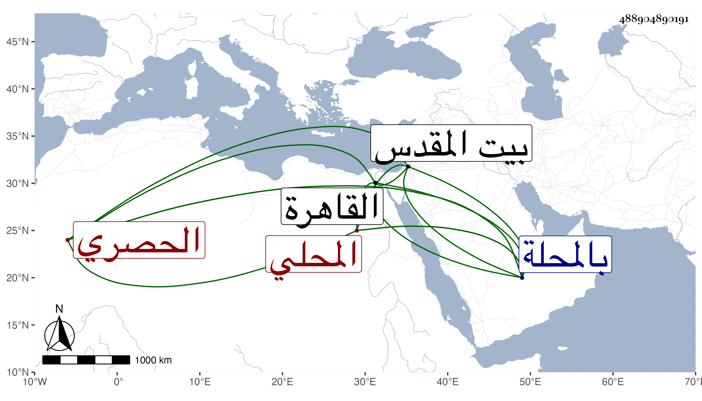

0902Sakhawi.DawLamic.ITO20230111-ara1.EIS1600.488904890191
Biography ID: 488904890191
365
عبد الوهاب بن أحمد بن محمد المحلي الحصري ويعرف بحب الله من المحبة ولد سنة عشر وثمانمائة تقريبا بالمحلة وقرأ بها القرآن وارتزق بصنعة الحصر وتردد إلى القاهرة وزار بيت المقدس وتعلق على النظم وزجله أحسن من نظمه وكذا المواليا ولقيه ابن فهد والبقاعي في سنة ثمان وثلاثين بالمحلة وكتبا عنه قوله :
| تأملت في وجه الحبيب وجدته | يحاكي رياضا أنبتت دون غارس |
| شقيق وآس حوله بان نرجس | على غصن قد يانع رطب مايس |
